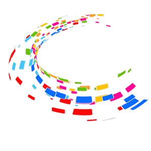

Сайт студії "Web-Deco" |
|
| головна Фотогaлеpея Телефони Статистика 3apeєcтрованi | |
Hовиии |
Зробити сайт з нами легкo. Створення власного сайту - это не тільки прерогатива великого бизнеса. Інтернет відкриває широкі можливості в першу чергу для малого бизнеса, для приватної підприємницької иніціативи. Адже, при започаткуванні власної справи розробка сайту потребує зовсім невеликих інвестицій, у порівнянні з иными видами витрат. Створити сайт, в більшості випадків - це значно дешевше, наприклад, ніж оренда офісу, чи витрати на зарплату працівників. Якщо Вам потрібно якісностворити сайт, який максимально буде відповідати своє адресму призначенню, то Ви завітали за вірноюою! Наша вебстудія допоможе, якщо Вам потрібно:
Мы будем раді стати Вам у вашего веб-сайта, якісний и привабливий для просмотра. Вебстудия Web-DECO предоставляет комплексные услуги по проектированию сайтов, дизайну сайтов и разработке сайтов.
Створити сайт в Киеве? Створити сайт в іншому місті
Так, цілком можливо. Територіально наша вебстудія знаходиться в Київській области, в том числе найчастіше ми займаємось розробкою сайтів для замовників из Києва. Але кількість користувачів Інтернет постійно росте в інших містах - в Дніпропетровську, Львові, Харкові, Донецьку, Запорожі, Кіровограді, Черкасах, и в більшості іністів України. Быстро, быстро и попит на веб-сайти. Тому ми будемо раді створити сайт и для клієнтів з будь-яких инших міст. В такому разі вебстудия использует все роботы из створення сайту отснято.
Створення сайту є однією з наших пропозиц и галуз веб-розробки. Коротко про всі пропозиції:
Дизайн сайту в веб-студиях Web-DECO
(картинка penzli.jpg) При створенні сайту його зовнішній вигляд, из нашей точки зору, має бути гармонійним и збалансованим. Дизайн сайту повинен мати певну оригінальність, щоб він легко запам'ятовувався. С другой стороны, на сайте мають бути присутні зручність зрительного сприйняття інтуітивна зрозумілістьінтерфейсів. Саме тому ми пропонуємо виключно индивідуальний підхід до створення дизайну сайту. При проектировании кольоровых элементов, функциональных элементов сайту ми обов'язково врахуємо специфические особенности качества и й особого побажения.
Разработка сайту в нашій веб-студії
(картинка html.jpg) Основа для ефективного виконання сайтом покладених на нього задач, як правило, закладаться в період розробки сайту. Ми ретельно ставимось до питань швидкодії и економії ресурсів при роботі сайту. В той же час, важливе значение мають його надійність, ручність керування сайтом, можливість оновлення и нарощення функціональності сайту. Тому ми розробили власну систему керування контентом сайту (CMS), яка дозволяет зробити процес управления створеним сайтом максимально зручним приємним.
При разработке веб-страниц веб-приложений Web-DECO запускает поиск программных продуктов и веб-интерфейсов.
Підтримка сайту, пошукова просування сайту, пошукова оптимізація сайту від веб-студий Web-DECO
(картинка graphic.jpg) Важный напрямк діяльності нашей вебстудії є також технічна інформаційна підтримка сайтів. Адже мало просто зробити сайт. Для того, чтобы создать обзор, созданный сайт может опубликовать свой контент в своем актуальном стане, а также в разное время использовать свои сервисы и функціональний тип. Кроме того, не следует загружать информацию об оптимальной работе сайта (SEO), загружать веб-сайт, работающий с пошаговыми системами. Посетители, получившие веб-сайт из пошукових машин, являются сайту найціннішими. Вони вже опислювали свої інтереси і намагаються знайти інформацію на потрібну для темы. Само по себе очень важно направить на сайт пользователей с пошуковыми системами, чтобы задать ценные фрази, чтобы стосуються Вашого бизнеса. Тож задача пошукової оптимізації - просвещение сайту в верхних рядах результатов пошукових систем за ключовими словами, які шукає користувач. Это дає гарну можливість привернуть увагу к сайту с бокуої кількості великого зацікавлених відвідувачів.
Звертайте в веб-студії Web-DECO, и мы с радостью застреваем свої здібності и досвід для вирішення Ваших задач! Ми могу створити сайт, який стане для Вас вдалою інвестицією.
|
| Сайт розробив "Автор" | |